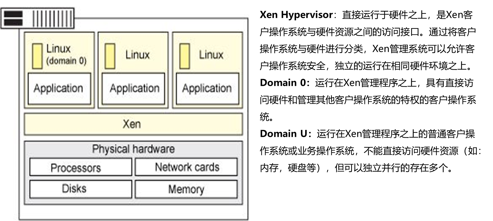

HCIA-Cloud-02-计算虚拟化简介
1.为什么需要虚拟化？
⑴硬件资源没有充分利用，利用率不高，浪费硬件资源；
⑵应用之间存在冲突，导致应用存在中断，无法提供服务；
2.什么是虚拟化？
虚拟化是指通过虚拟化技术将一台计算机虚拟成多台逻辑计算机，在一台计算机上同时运行多个逻辑计算机，每个逻辑计算机可运行不同的操作系统，并且应用程序都可以在相互独立的空间运行而互不影响，从而显著提高计算机的工作效率。
注：一台虚拟机的CPU、内存资源只能来自于同一个物理服务器。
3.计算虚拟化的发展史
4.虚拟化带来的好处
1）提高硬件利用率；
2）降低能耗，绿色节能；
3）提高IT运维效率，系统管理人员减少；
4）操作系统和硬件的解耦。
5.计算虚拟化中的重要概念
Guest OS：虚拟机操作系统，由物理硬件通过虚拟化手段虚拟出来虚拟机安装好的操作系统(Windows、Linux、Unix)；
Guest Machine：虚拟机，由物理硬件通过虚拟化软件虚拟出来；
Hypervisor：Hypervisor，又称虚拟机监视器（英语：virtual machine monitor，缩写为 VMM），是用来建立与执行虚拟机器的软件、固件或硬件。
Host OS：运行在物理主机上的操作系统。
Host Machine：物理主机。
6.Hypervisor的功能
① 虚拟硬件资源；
VMM利用底层硬件资源来构建一个包含虚拟CPU、内存和外设等的虚拟环境。在这个环境中，Guest OS认为自己运行在一台真是的计算机上，并唯一拥有这台“虚拟”机器上的所有资源。
② 实现对虚拟资源的调度；
VMM可以同时构建多个虚拟机环境，从而允许多个Guest OS并发执行，VMM利用一套策略来有效的调度资源。
③ 提供虚拟化环境的管理接口；
VMM提供一组完备的管理接口，来支持虚拟环境的创建、删除、暂停和迁移等功能。上层的管理程序通过调用VMM提供的管理接口，为用户提供管理界面。
7.虚拟化的分类
⑴裸金属虚拟化（I型虚拟化）：Hypervisor直接安装在物理机上，多个虚拟机在Hypervisor上运行。Hypervisor的实现方式就是一个特殊定制的Linux系统。比如XEN。
⑵宿主虚拟化（II型虚拟化）：物理机上首先安装常规的操作系统。比如Redhat、Ubantu和Windows，Hypervisor作为OS上的一个程序模块运行，并对虚拟机进行管理。比如KVM。
8.虚拟化的特点
1）分区：在一个物理服务器上同时运行多个虚拟机；
2）隔离：虚拟机之间互不影响、互不干涉；
3）封装：虚拟机实际上是以文件形式存放，可以通过迁移或拷贝文件的方式，实现对虚拟机的迁移；
4）相对于硬件独立，不需要更改配置，虚拟机可以在任意服务器上运行；
9.CPU虚拟化
Intel的CPU将特权级别分为4个级别：Ring0,RIing1,Ring2,Ring3。Windows只使用其中的两个级别Ring0和Ring3，Ring0只给操作系统用，Ring3谁都能用。如果普通应用程序企图执行Ring0指令，则Windows会显示“非法指令”错误信息。
Ring 0：用于操作系统内核，优先级最高，拥有最高的“特权”；
Ring 1和Ring 2：用于操作系统服务，优先级次之；
Ring 3：用于应用程序，优先级最低。
10.内存虚拟化
我们知道，早期的计算机内存，只有物理内存，而且空间是极其有限的，每个应用或进程在使用内存时都得小心翼翼，不能覆盖别的进程的内存区。
为了避免这些问题，就提出了虚拟内存的概念，其抽象了物理内存，相当于对物理内存进行了虚拟化，保证每个进程都被赋予一块连续的，超大的（根据系统结构来定，32 位系统寻址空间为 232，64 位系统为 264）虚拟内存空间，进程可以毫无顾忌地使用内存，不用担心申请内存会和别的进程冲突，因为底层有机制帮忙处理这种冲突，能够将虚拟地址根据一个页表映射成相应的物理地址。这种机制正是虚拟化软件做的事，也就是 MMU 内存管理单元。
这里要说的不是这种虚拟内存，而是基于虚拟机的内存虚拟化，它们本质上是一样的，通过对虚拟内存的理解，再去理解内存虚拟化就比较容易了。
虚拟机本质上是 Host 机上的一个进程，按理说应该可以使用 Host 机的虚拟地址空间，但由于在虚拟化模式下，虚拟机处于非 Root 模式，无法直接访问 Root 模式下的 Host 机上的内存。
这个时候就需要 VMM 的介入，VMM 需要 intercept （截获）虚拟机的内存访问指令，然后 virtualize（模拟）Host 上的内存，相当于 VMM 在虚拟机的虚拟地址空间和 Host 机的虚拟地址空间中间增加了一层，即虚拟机的物理地址空间，也可以看作是 Qemu 的虚拟地址空间（稍微有点绕，但记住一点，虚拟机是由 Qemu 模拟生成的就比较清楚了）。
所以，内存软件虚拟化的目标就是要将虚拟机的虚拟地址（Guest Virtual Address, GVA）转化为 Host 的物理地址（Host Physical Address, HPA），中间要经过虚拟机的物理地址（Guest Physical Address, GPA）和 Host 虚拟地址（Host Virtual Address）的转化，即：
GVA -> GPA -> HVA -> HPA
其中前两步由虚拟机的系统页表完成，中间两步由 VMM 定义的映射表（由数据结构 kvm_memory_slot 记录）完成，它可以将连续的虚拟机物理地址映射成非连续的 Host 机虚拟地址，后面两步则由 Host 机的系统页表完成。如下图所示。
11.I/O虚拟化
现实中的外设资源是有限的，为了满足多个客户机操作系统的需求，VMM必须通过I/O虚拟化的方式来复用有限的外设资源；VMM截获客户操作系统对设备的访问请求，然后通过软件的方式来模拟真实设备的效果。
I/O虚拟化可以分为：
模拟（完全虚拟）：完全使用软件来模拟真实硬件，模拟通常硬件，例如键盘鼠标，通过焦点捕获，焦点被哪个主机捕获就被哪个主机使用，性能很差；
半虚拟化：对硬件驱动由前端（IO frontend）直接转到后端（IO backend）调用，通常金适用于硬盘和网卡，性能高；
IO-through：IO透传，直接分配给虚拟机物理设备，例如直接分配一个硬盘或网卡给虚拟机，需要硬件具备IO透传技术，在Xen下由Dom0分配，但是访问使用直接使用，不经过Dom0，需要硬件支持。
12.云计算和虚拟化的区别
⑴云计算是一种模式，虚拟化是一种技术;
⑵虚拟化是云计算在IaaS层所使用技术，但并非云计算的核心关注点；
13.主流的计算虚拟化技术


Xen Hypervisor：直接运行于硬件之上，是Xen客户操作系统与硬件资源之间的访问接口。通过将客户操作系统与硬件进行分类，Xen管理系统可以允许客户操作系统安全，独立的运行在相同硬件环境之上。
Domain 0：运行在Xen管理程序之上，具有直接访问硬件和管理其他客户操作系统的特权的客户操作系统。
Domain U：运行在Xen管理程序之上的普通客户操作系统或业务操作系统，不能直接访问硬件资源（如：内存，硬盘等），但可以独立并行的存在多个。
14.KVM是什么？
KVM(Kernel Virtual Machine，内核虚拟机)基于虚拟化扩展（Intel VT或AMD-V）的x86硬件平台实现Linux的全虚拟化解决方案。
KVM 中，虚拟机被实现为常规的 Linux 进程，由标准 Linux 调度程序进行调度；虚机的每个虚拟 CPU 被实现为一个常规的 Linux 进程。这使得 KMV 能够使用 Linux 内核的已有功能。但是，KVM 本身不执行任何硬件模拟，需要客户空间程序通过 /dev/kvm 接口设置一个客户机虚拟服务器的地址空间，向它提供模拟的 I/O，并将它的视频显示映射回宿主的显示屏。目前这个应用程序是QEMU。
15.KVM体系架构
libvirt：主要是用于管理KVM和Hypervisor
virt-manager：是kvm图形化管理工具
virt-install：是kvm的CLI命令，主要是用于创建虚拟机
virt-viewer：显示虚拟机的图形控制台的最小工具
16.KVM——Libvirt管理工具

Libvirt：是 KVM 的管理工具。Libvirt 除了能管理 KVM 这种 Hypervisor，还能管理 Xen，VirtualBox 等。OpenStack 底层也使用 Libvirt。
Libvirt 包含 3 个东西：后台 daemon 程序 libvirtd、API 库和命令行工具 virsh
（1）libvirtd是服务程序，接收和处理 API 请求；
（2）API 库使得其他人可以开发基于 Libvirt 的高级工具，比如 virt-manager，这是个图形化的 KVM 管理工具，后面我们也会介绍；
（3）virsh 是我们经常要用的 KVM 命令行工具，后面会有使用的示例。作为 KVM 和 OpenStack 的实施人员，virsh 和 virt-manager 是一定要会用的。
17.KVM默认操作I/O流程
1） 虚拟机中的磁盘设备发起一次IO操作请求；
2) KVM模块中的I/O Trap Code（I/O捕获程序）将这个IO操作请求捕获到，进行相应的处理，然后将处理后的请求放到I/O共享页中；
3) KVM模块会通知QEMU，告诉它有新的I/O操作请求放到了共享页中；
4) QEMU收到通知后，到共享页中获取该I/O操作请求的具体信息；
5) QEMU对该请求进行模拟，同时根据I/O操作请求的信息调用运行在内核态的设备驱动，去进行真正的IO操作；
6) 通过设备驱动去对物理硬件执行真正的IO操作；
7 QEMU将执行后的结果返回到共享页中，同时通知KVM模块已完成了此次的I/O操作；
8) I/O捕获程序从共享页中将返回的结果读取出来；
9) I/O捕获程序将操作结果返回给虚拟机；
10) 虚拟机的将结果返回给发起操作的应用程序。
18.KVM——Virtio的I/O操作流程

1) 第一步也是由虚拟机发起I/O操作请求；
2) 第二步的时候和使用默认模型不一样，这个I/O操作请求不会经过I/O捕获程序，而是直接以前后端的形式放到环形缓冲区，同时KVM模块通知后端驱动；
3) QEMU到环形缓冲区获取到操作请求的具体信息；
4) 后端驱动直接调用真实的物理设备驱动进行具体的I/O操作；
5) 由真实的设备驱动完成此次操作；
6) QEMU将完成结果返回到环形缓冲区，并且由KVM模块通知前端驱动；
7) 前端驱动从环形缓冲区获取到此次I/O操作的结果；
8) 前端驱动将结果返回给具体发起该操作的应用程序。
19.FusionCompute是什么？
FusionCompute是云操作系统软件，主要负责对虚拟资源、业务资源、用户资源的集中管理。它采用统一的接口，对这些虚拟资源进行集中调度和管理，从而降低业务的运行成本，保证系统的安全性和可靠性，协助运营商和企业构筑安全、绿色、节能的云数据中心能力。
20.FusionComput产品结构
软件组成

FusionCompute由 CNA（ComputingNode Agent，计算节点代理）、VNA虚拟节点代理，部署在CNA上，实施计算、存储、网络的虚拟化的配置管理、VRM (Virtual Resource Manager，虚拟资源管理器) 组成。
下表介绍FusionCompute各模块功能：
| 模块 | 功能 |
| CNA | CNA主要提供以下功能：
|
| VRM |
VRM主要提供以下功能：
管理集群内的块存储资源。 管理集群内的计算节点，将物理的计算资源映射成虚拟的计算资源。 管理集群内的网络资源(IP/VLAN/DHCP)，为虚拟机分配IP地址。 管理集群内虚拟机的生命周期以及虚拟机在计算节点上的分布和迁移。 管理集群内资源的动态调整。 通过对虚拟资源、用户数据的统一管理，对外提供弹性计算、存储、IP等服务。 通过提供统一的操作维护管理接口，操作维护人员通过WebUI远程访问FusionCompute对整个系统进行操作维护，包含资源管理、资源监控、资源报表等。 |
VRM是FusionCompute系统的管理单元，一般运行在虚拟机上，能够对系统的虚拟资源、业务资源、用户资源进行集中管理，为管理员提供统一的维护操作接口。
接口与协议
FusionCompute提供开放、标准的协议接口，可与多种设备实现对接或互通，与对接实体之间的接口与协议如下图所示。
FusionCompute支持的接口作用:
也即VRM系统对外提供的接口，主要用于FusionManager从FusionCompute获取虚拟化资源配置、告警等信息；FusionCompute根据FusionManager的指令，对虚拟机进行管理。对接实体是FusionManager，采用协议名称REST。